Oil Grimoire
Absolute 33
- Acacia Absolute
- Apple Blossom Oil
 Benzoin Absolute
Benzoin Absolute Boronia Absolute
Boronia Absolute Cabbage Rose Absolute
Cabbage Rose Absolute Calendula Absolute
Calendula Absolute Carnation Oil
Carnation Oil Cassie Absolute
Cassie Absolute Deertongue Absolute
Deertongue Absolute Gardenia Absolute
Gardenia Absolute- Honeysuckle Absolute
 Hyacinth Absolute
Hyacinth Absolute Jasmine Absolute
Jasmine Absolute Lilac Absolute
Lilac Absolute Linden Absolute
Linden Absolute Lotus Oil
Lotus Oil Magnolia Oil
Magnolia Oil Melilotus Absolute
Melilotus Absolute Mimosa Absolute
Mimosa Absolute Myrrh Oil
Myrrh Oil Narcissus Oil
Narcissus Oil Oakmoss Absolute
Oakmoss Absolute- Orris Absolute
 Plumeria Absolute
Plumeria Absolute- Rose Oil
 Spanish Broom Absolute
Spanish Broom Absolute Stephanotis Oil
Stephanotis Oil Tonka Oil
Tonka Oil Tuberose Oil
Tuberose Oil Valerian Essential Oil
Valerian Essential Oil Vanilla Absolute
Vanilla Absolute Violet Flower Absolute
Violet Flower Absolute- Violet Leaf Absolute
Accord 12
Animal 4
Carrier 42
 Almond Oil
Almond Oil Apricot Kernel Oil
Apricot Kernel Oil Argan Oil
Argan Oil Avocado Oil
Avocado Oil Baobab Oil
Baobab Oil- Black Cumin Seed Oil
 Borage Seed Oil
Borage Seed Oil Camellia Oil
Camellia Oil- Canola Oil
 Castor Oil
Castor Oil Coconut Oil
Coconut Oil Cottonseed Oil
Cottonseed Oil Evening Primrose Oil
Evening Primrose Oil Flaxseed Oil
Flaxseed Oil Grapeseed Oil
Grapeseed Oil Hazelnut Oil
Hazelnut Oil Hemp Oil
Hemp Oil Jojoba Oil
Jojoba Oil Kukui Nut Oil
Kukui Nut Oil Macadamia Oil
Macadamia Oil Meadowfoam Seed Oil
Meadowfoam Seed Oil Moringa Oil
Moringa Oil- Mustard Seed Oil
 Neem Oil
Neem Oil Olive Oil
Olive Oil- Palm Oil
 Peach Kernel Oil
Peach Kernel Oil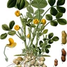
Peanut Oil Pecan Oil
Pecan Oil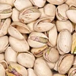
Pistachio Oil Pomegranate Seed Oil
Pomegranate Seed Oil Raspberry Seed Oil
Raspberry Seed Oil Rice Bran Oil
Rice Bran Oil Rosehip Oil
Rosehip Oil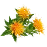
Safflower Oil Seabuckthorn Berry Oil
Seabuckthorn Berry Oil Sesame Oil
Sesame Oil- Soy Oil
- Sunflower Oil
- Sweet Almond Oil
- Vitamin E Oil
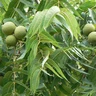
Walnut Oil
Essential 179
 Ajowan Essential Oil
Ajowan Essential Oil Allspice Essential Oil
Allspice Essential Oil- Amber Oil
 Ambrette Seed Essential Oil
Ambrette Seed Essential Oil Amyris Essential Oil
Amyris Essential Oil Angelica Root Essential Oil
Angelica Root Essential Oil Angelica Seed Essential Oil
Angelica Seed Essential Oil Anise Essential Oil
Anise Essential Oil Asafetida Essential Oil
Asafetida Essential Oil Atlas Cedarwood Essential Oil
Atlas Cedarwood Essential Oil Basil Essential Oil
Basil Essential Oil Bay Laurel Essential Oil
Bay Laurel Essential Oil Bergamot Essential Oil
Bergamot Essential Oil Birch Bud Essential Oil
Birch Bud Essential Oil Birch Tar Oil
Birch Tar Oil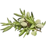
Bitter Almond Essential Oil Bitter Fennel Essential Oil
Bitter Fennel Essential Oil Bitter Orange Essential Oil
Bitter Orange Essential Oil Black Pepper Essential Oil
Black Pepper Essential Oil Boldo Leaf Essential Oil
Boldo Leaf Essential Oil Borneol Essential Oil
Borneol Essential Oil Broad-Leaved Peppermint Eucalyptus Essential Oil
Broad-Leaved Peppermint Eucalyptus Essential Oil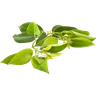
Brown Camphor Essential Oil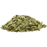
Buchu Essential Oil- Cabreuva Essential Oil
 Cade Oil
Cade Oil Cajeput Essential Oil
Cajeput Essential Oil Calamintha Essential Oil
Calamintha Essential Oil Calamus Essential Oil
Calamus Essential Oil Camphor Essential Oil
Camphor Essential Oil Canadian Balsam Essential Oil
Canadian Balsam Essential Oil Cananga Essential Oil
Cananga Essential Oil Caraway Essential Oil
Caraway Essential Oil Cardamom Essential Oil
Cardamom Essential Oil Carrot Seed Essential Oil
Carrot Seed Essential Oil Cascarilla Bark Essential Oil
Cascarilla Bark Essential Oil Cassia Bark Essential Oil
Cassia Bark Essential Oil Cassia Leaf Essential Oil
Cassia Leaf Essential Oil Cedar Essential Oil
Cedar Essential Oil Celery Seed Essential Oil
Celery Seed Essential Oil Cinnamon Bark Essential Oil
Cinnamon Bark Essential Oil Cinnamon Leaf Essential Oil
Cinnamon Leaf Essential Oil Citronella Essential Oil
Citronella Essential Oil Clary Sage Essential Oil
Clary Sage Essential Oil Clove Essential Oil
Clove Essential Oil- Clove Leaf Essential Oil
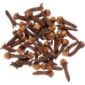
Clove Stem Essential Oil Common Thyme Essential Oil
Common Thyme Essential Oil Copaiba Balsam Essential Oil
Copaiba Balsam Essential Oil Coriander Seed Essential Oil
Coriander Seed Essential Oil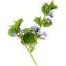
Cornmint Essential Oil Costus Essential Oil
Costus Essential Oil Cubeb Essential Oil
Cubeb Essential Oil Cumin Essential Oil
Cumin Essential Oil Cypress Essential Oil
Cypress Essential Oil Dill Seed Essential Oil
Dill Seed Essential Oil- Dill Weed Essential Oil
 Dwarf Pine Essential Oil
Dwarf Pine Essential Oil Elecampane Essential Oil
Elecampane Essential Oil Elemi Essential Oil
Elemi Essential Oil Eucalyptus Essential Oil
Eucalyptus Essential Oil Exotic Basil Essential Oil
Exotic Basil Essential Oil Fir Needle Essential Oil
Fir Needle Essential Oil Frankincense Essential Oil
Frankincense Essential Oil Galangal Essential Oil
Galangal Essential Oil Galbanum Essential Oil
Galbanum Essential Oil Garlic Essential Oil
Garlic Essential Oil Geranium Essential Oil
Geranium Essential Oil- German Chamomile Essential Oil
 Ginger Essential Oil
Ginger Essential Oil Grapefruit Essential Oil
Grapefruit Essential Oil Guaiacwood Essential Oil
Guaiacwood Essential Oil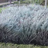
Helichrysum Essential Oil Hemlock Spruce Essential Oil
Hemlock Spruce Essential Oil Hops Essential Oil
Hops Essential Oil Horseradish Oil
Horseradish Oil Hyssop Essential Oil
Hyssop Essential Oil- Jaborandi Oil
 Java Citronella Essential Oil
Java Citronella Essential Oil Juniper Berry Essential Oil
Juniper Berry Essential Oil- Juniper Needle Essential Oil
- Lavandin Essential Oil
- Lavender Essential Oil
 Lemon-Scented Eucalyptus Essential Oil
Lemon-Scented Eucalyptus Essential Oil Lemon Balm Essential Oil
Lemon Balm Essential Oil- Lemon Essential Oil
 Lemongrass Essential Oil
Lemongrass Essential Oil Lemon Verbena Essential Oil
Lemon Verbena Essential Oil Levant Storax Essential Oil
Levant Storax Essential Oil- Lime Essential Oil
 Linaloe Seed Essential Oil
Linaloe Seed Essential Oil- Linaloe Wood Essential Oil
 Longleaf Pine Essential Oil
Longleaf Pine Essential Oil Lovage Herb Essential Oil
Lovage Herb Essential Oil- Lovage Root Essential Oil
 Mace Essential Oil
Mace Essential Oil- Magnolia Oil
- Mandarin Essential Oil
 Manuka Essential Oil
Manuka Essential Oil Marjoram Essential Oil
Marjoram Essential Oil Mastic Essential Oil
Mastic Essential Oil May Chang Essential Oil
May Chang Essential Oil- Mint Essential Oil
 Moroccan Chamomile Essential Oil
Moroccan Chamomile Essential Oil Mountain Pepper Essential Oil
Mountain Pepper Essential Oil Mugwort Essential Oil
Mugwort Essential Oil- Mustard Essential Oil
- Myrrh Oil
- Myrtle Essential Oil
- Neroli Essential Oil
 Niaouli Essential Oil
Niaouli Essential Oil Nutmeg Essential Oil
Nutmeg Essential Oil Onion Essential Oil
Onion Essential Oil- Opopanax Essential Oil
- Orange Essential Oil
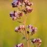
Oregano Essential Oil Palmarosa Essential Oil
Palmarosa Essential Oil Palo Santo Essential Oil
Palo Santo Essential Oil- Parsley Herb Essential Oil
- Parsley Seed Essential Oil
 Patchouli Essential Oil
Patchouli Essential Oil Pennyroyal Essential Oil
Pennyroyal Essential Oil Peppermint Essential Oil
Peppermint Essential Oil Peru Balsam Essential Oil
Peru Balsam Essential Oil- Petitgrain Essential Oil
 Pimento Essential Oil
Pimento Essential Oil Pine Essential Oil
Pine Essential Oil- Ravensara Essential Oil
 Rock Rose Essential Oil
Rock Rose Essential Oil Roman Chamomile Essential Oil
Roman Chamomile Essential Oil Rosalina Essential Oil
Rosalina Essential Oil- Rose Geranium Essential Oil
 Rosemary Essential Oil
Rosemary Essential Oil- Rose Oil
- Rose Otto Oil
- Rosewood Essential Oil
 Rue Essential Oil
Rue Essential Oil Sage Essential Oil
Sage Essential Oil Sandalwood Essential Oil
Sandalwood Essential Oil Santolina Essential Oil
Santolina Essential Oil Sassafras Essential Oil
Sassafras Essential Oil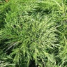
Savine Essential Oil Savory Essential Oil
Savory Essential Oil Schinus Molle Essential Oil
Schinus Molle Essential Oil- Scotch Pine Essential Oil
- Silver Fir Templin Essential Oil
 Spanish Oregano Essential Oil
Spanish Oregano Essential Oil- Spanish Sage Essential Oil
 Spearmint Essential Oil
Spearmint Essential Oil Spike Lavender Essential Oil
Spike Lavender Essential Oil Spikenard Essential Oil
Spikenard Essential Oil Spruce Essential Oil
Spruce Essential Oil Star Anise Essential Oil
Star Anise Essential Oil Sweet Birch Essential Oil
Sweet Birch Essential Oil- Sweet Fennel Essential Oil
 Tagetes Essential Oil
Tagetes Essential Oil Tangerine Essential Oil
Tangerine Essential Oil Tansy Essential Oil
Tansy Essential Oil Tarragon Essential Oil
Tarragon Essential Oil Tea Tree Essential Oil
Tea Tree Essential Oil Texas Cedarwood Essential Oil
Texas Cedarwood Essential Oil Thuja Essential Oil
Thuja Essential Oil Tolu Balsam Essential Oil
Tolu Balsam Essential Oil- Tonka Oil
 Turmeric Essential Oil
Turmeric Essential Oil- Turpentine Essential Oil
- Valerian Essential Oil
 Vervain Oil
Vervain Oil Vetivert Essential Oil
Vetivert Essential Oil Virginian Cedarwood Essential Oil
Virginian Cedarwood Essential Oil West Indian Bay Essential Oil
West Indian Bay Essential Oil Wild Ginger Essential Oil
Wild Ginger Essential Oil- Wintergreen Oil
 Winter Savory Essential Oil
Winter Savory Essential Oil- Wormseed Essential Oil
 Wormwood Essential Oil
Wormwood Essential Oil Yarrow Essential Oil
Yarrow Essential Oil- Yellow Camphor Essential Oil
 Ylang Ylang Essential Oil
Ylang Ylang Essential Oil
Infused 7
No Type 35
- Balm of Gilead Oil
- Balsam of Peru Oil
- Balsam of Tolu Oil
- Bdellium Gum Oil
- Brazilwood Oil
- Castoreum Oil
- Catnip Oil
- Costmary Oil
- Cotton Lavender Oil
- Cyclamen Oil
- Dittany of Crete Oil
 Dragon's Blood Oil
Dragon's Blood Oil- Frangipani Oil
- Heliotrope Oil
- High John the Conqueror Oil
- Jasmine Attar
- Labdanum Oil
- Life Everlasting Oil
- Lily of the Valley Oil
- Monoi Oil
- Night-Blooming Jasmine Attar
- Peony Oil
- Perilla Oil
- Rhodium Oil
- Rose Hydrosol
- Sandac Gum Oil
- Southernwood Oil
- Strawberry Oil
- Styrax Oil
- Sumbul Root Oil
- Sweet Cicely Oil
- Sweet Fern Oil
- Thus Gum Oil
- Wisteria Oil
- Woodruff Oil